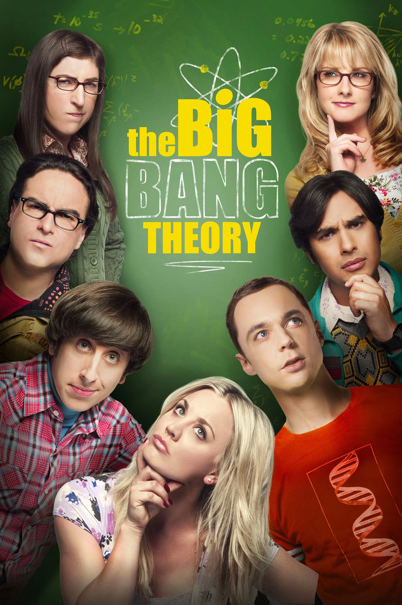
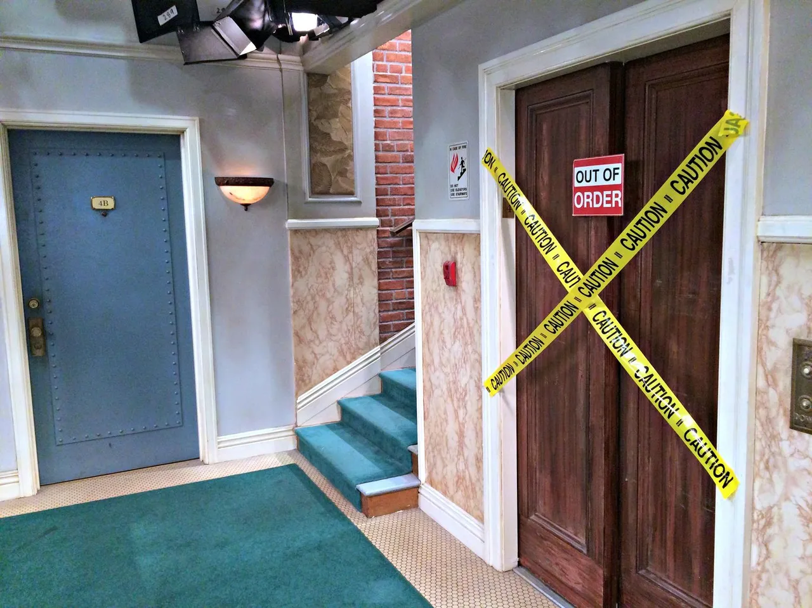

Perfil Histórico dos Personagens
Selecione as mentes brilhantes por trás das equações e descubra suas trajetórias.
Explorar Linha do Tempo da Série (2007 - 2019)
12 Temporadas, 279 Episódios e um legado eterno na comédia mundial.
Selecione as mentes brilhantes por trás das equações e descubra suas trajetórias.


A aclamação da crítica incluiu 4 prêmios de Melhor Ator em Série de Comédia para Jim Parsons como Sheldon Cooper.
Nas temporadas finais, a série atingiu recordes, tornando-se a sitcom multicanais mais assistida do século XXI.
O Dr. David Saltzberg atuou como consultor de física oficial do show, garantindo que todas as equações estivessem corretas.

Estudos apontam que a série aumentou significativamente o interesse de jovens vestibulandos por cursos de Física e Engenharia ao redor do mundo. Personagens excêntricos transformaram conceitos matemáticos complexos em piadas assimiladas pela cultura pop de massa.


